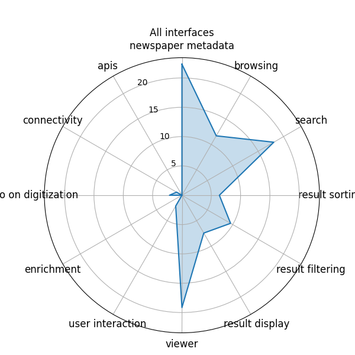
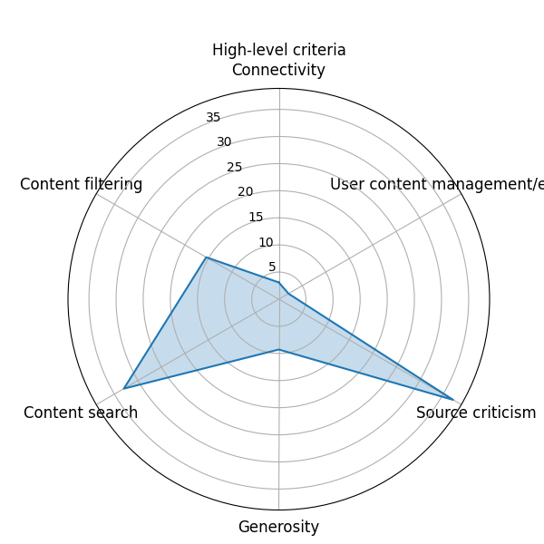

5.1. Critérios de avaliação das interfaces#
Inspirado no modelo proposto por Ehrmann et al. [2019].
Crítica da fonte
Busca de conteúdo
Filtro de conteúdo
Generosidade
Gerenciamento e exploração de conteúdo pelo usuário
Conectividade
Segundo as autoras, esses critérios:
capturam tanto as intenções atuais quanto potenciais dos provedores de conteúdo e os requisitos do usuário. (EHRMANN; BUNOUT; DÜRING, 2017, p. 2)
Famílias de Propriedades#
Além dos critérios propostos, os autores também criara grupos de propriedades que agrupam as propriedades de cada critério. Esses grupos são:
A) Informações sobre a coleção de periódicos
B) Metadados dos periódicos
C) Navegação
D) Opções de pesquisa
E) Exibição dos resultados da busca
F) Organização dos resultados da busca
G) Filtros nos resultados da busca
H) Visualizador
I) Documentação sobre a digitalização
J) Conta pessoal e interações do usuário
K) Conectividade
L) APIs e códigos
M) Processamento de conteúdo
Cada grupo reúne uma lista de propriedades que estão relacionadas com o critério correspondente.
Vamos explicar cada um dos seis critérios e listar as propriedades (organizadas por seus grupos) que compõem cada um deles.
1. Crítica da fonte ou O que estou olhando?#
descreve a avaliação crítica de documentos com base na proveniência e consciência do contexto. (EHRMANN; BUNOUT; DÜRING, 2017, p. 4)
Propriedades#
A) Informações sobre a coleção de periódicos#
Número de título(s) de periódico(s) na coleção
Número de edições na coleção
Número de páginas na coleção
Número de artigos na coleção
B) Metadados dos periódicos#
Títulos alternativos, relacionados ou anteriores/ subsequentes
Lugar de publicação
Cobertura geográfica
Editor
Período de publicação
Periodicidade
Descrição histórica
Idioma
Visão em calendário da coleção
Indicação do titular do arquivo
E) Exibição dos resultados da busca#
Pré-visualização de trechos de texto com OCR ou imagem
H) Visualizador#
Exibição de facsimile
Exibição de texto com OCR
Mostra página cheia
Mini-mapa interativo da página
Visão geral das edições disponíveis
I) Documentação sobre a digitalização#
Análise de layout do documento ao nível de artigo
Pontuação de confiabilidade da análise de layout
Documentação sobre vieses e preconceitos
Pontuação de relevância dos resultados da busca
Data de digitalização ao nível de título
Resolução da digitalização em dpi
Informações sobre ferramentas de OCR utilizadas
Aviso de copyright
Documentação sobre métodos de digitalização
L) APIs e códigos#
Link para o código fonte da interface
API
IIIF Image API
IIIF Presentation API
2. Busca de conteúdo ou Como me envolvo com o material/conteúdo#
to evaluate the extent to which interfaces can help understand the information space and identify relevant content. (EHRMANN; BUNOUT; DÜRING, 2017, p. 5)
Propriedades#
D) Opções de pesquisa#
Busca por palavra-chave básica
Operadores Booleanos
Busca por frases
Fuzzy search
Wild card
Operador de proximidade
Limite de data
Limite por idioma
Limite por título de periódico
Limite por local de publicação
Limite por temática (metadados)
Limite por segmentos / zonas do periódico
Limite por categoria de artigo
LImite por extensão do artigo
Limite por titular do arquivo / biblioteca
Limite por licença / acessibilidade
Busco por entidades nomeadas
E) Exibição dos resultados da busca#
Destaque de palavras-chave em facsimiles
Destaque de palavras-chave em texto com OCR
H) Visualizador#
Busca em página visualizada
Opção de continuar para próximo resultado
M) Processamento de conteúdo#
NERC
Link de entidades
Correção pós-OCR
Topic modeling
Text re-use
Sentiment analysis
Query
Event detection
3. Filtro de conteúdo ou Como seleciono#
to determine the extent to which interfaces support the narrowing down of search results from large corpora. (EHRMANN; BUNOUT; DÜRING, 2017, p. 5)
Propriedades#
F) Organização dos resultados da busca#
Por relevância
Por data
Por título do periódico
Por título do artigo
Por tipo de conteúdo (propaganda, artigo, ilustração)
Por data de publicação online
Por autor
Por qualidade do texto
Por idioma
Por popularidade (número de visualizações)
G) Filtros nos resultados da busca#
Por título do periódico
Por frequência de publicação
Por orientação política/religiosa/etc do periódico
Por tema do periódico (metadados)
Por tipo de conteúdo
Por seção
Por evento
Por pessoa
Por organização
Por lugar mencionado no texto
Por período de tempo
Por tópico
Por tag manual
Por local de publicação
Por editor
Por extensão do artigo
Pelo nível de segmentação
Por idioma
Por licença / acessibilidade
Pela data de publicação online
4. Generosidade ou Como eu descubro#
to appraise whether interfaces feature functionalities which, beyond keyword search and content browsing, help users discover relevant content they had not anticipated to find. (EHRMANN; BUNOUT; DÜRING, 2017, p. 5)
Propriedades#
D) Opções de pesquisa#
Query autocomplete
Sugestão de query
E) Exibição dos resultados da busca#
Distribuição ao longo do tempo
Distribuição por local de publicação
Distribuição por cobertura de periódico
Distribuição por nomes de lugares nos artigos
N-grams
H) Visualizador#
Opção para continuar para a próxima página
M) Processamento de conteúdo#
Recomendações
5. Gerenciamento e exploração de conteúdo pelo usuário ou Como eu trabalho#
o evaluate the extent to which interfaces allow scholars to collect, organize, tag and compare their own collections of material so as to be able to work on specific research questions, in isolation or in collaboration. (EHRMANN; BUNOUT; DÜRING, 2017, p. 5)
Propriedades#
J) Conta pessoal e interações do usuário#
Salvar artigos para favoritos
Salvar queries para favoritos
Etiquetar artigos
Manter registro dos materiais visualizados
Recomendações de artigos
Links permanentes
Exportar citações
Opção de corrigir OCR
Opção de corrigir OLR
Usuário pode adicionar/editar metadados
Ferramenta de screenshot
Opções de Download (formatos de ficheiros)
Download em massa
Organizar artigos em coleções
Visualização comparativa de coleções pessoais
6. Conectividade ou Como eu vou além#
to assess how interfaces interlink their collections so as to allow the study of digitized newspapers and other sources across institutional silos. (EHRMANN; BUNOUT; DÜRING, 2017, p. 5)
Propriedades#
B) Metadados dos periódicos#
Links externos
K) Conectividade#
Identificador de terceiros
Links para outros repositórios
Tecnologias de web semântica
Análise dos resultados#
Vamos analisar os dados coletados e organizados no ficheiro InterfaceReview-pt-2023.csv a partir da metodologia, notebooks e funções criadas por Ehrmann, Bunout e Düring (2017).
O notebook completo, os dados e gráficos gerados estão organizados no tópico 5.2.
Abaixo vemos uma representação gráfica geral organizados por famílias de propriedades.

E aqui, uma visualização geral das interfaces organizadas pelos critérios de avaliação.

Referências#
Maud Ehrmann, Estelle Bunout, and Marten Düring. Historical Newspaper User Interfaces: A Review. In Proceedings of the 85th IFLA General Conference and Assembly (IFLA). Athens, Greece, January 2019. IFLA Library. URL: https://www.researchgate.net/publication/339529189_Historical_Newspaper_User_Interfaces_A_Review, doi:10.5281/zenodo.3404154.